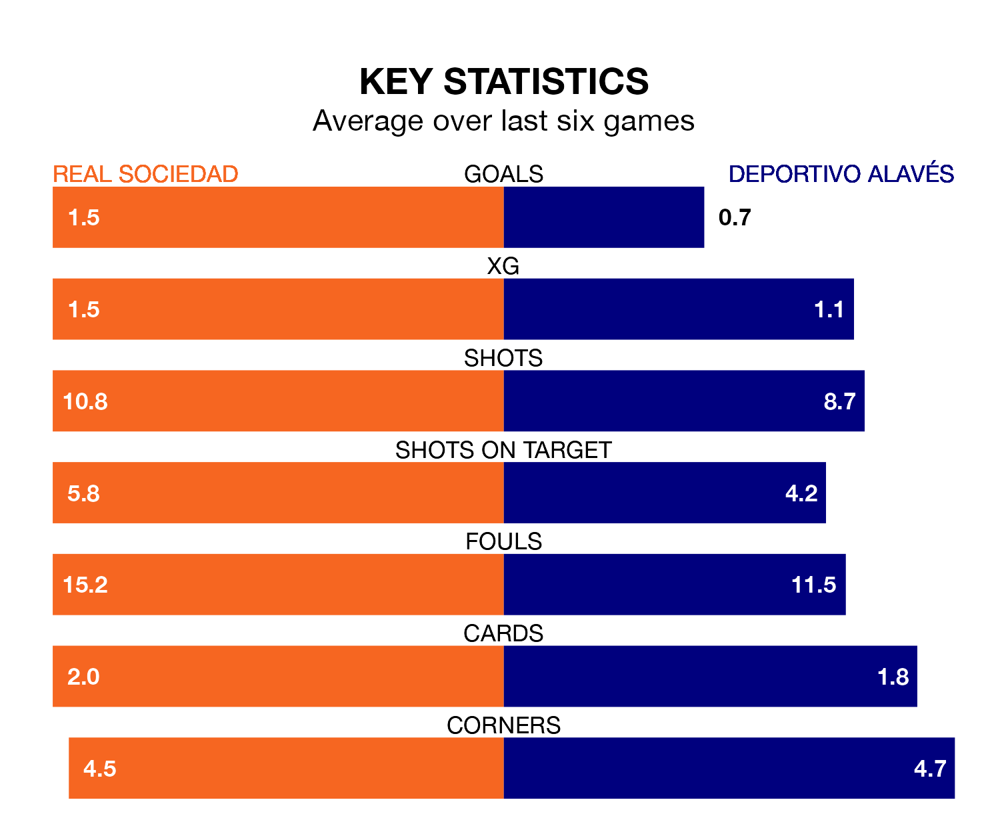

Real Sociedad are heavy favourites to keep all three points at home in Tuesday's late kick-off against Deportivo Alavés.
Real Sociedad, who sit sixth in La Liga with 18 games played, are priced at 1.5 to seal victory at the Reale Arena.
Sitting 10 places and 15 points behind them in the table, Alavés are 6.2 to win with *Betting Company*, while the draw is at 3.7.
With Álex Remiro between the sticks, La Real can rely on one of the league's safest pair of hands. He has kept seven clean sheets in his 18 appearances this season, and only one other 'keeper – Athletic Club Bilbao's Unai Simón – has been able to prevent the opposition scoring on more occasions in La Liga.
In Alavés's net, Antonio Sivera has three clean sheets in 18 games. He has conceded a goal every 77 minutes, 60% more often than the 125 minutes between goals for Remiro Gargallo.
With 14 goals in 18 games so far this season, Depor are the league's joint-second-lowest scorers with 0.8 goals per game. And they are conceding at an average rate, letting in 24 goals at a rate of 1.3 per game.
Real Sociedad, meanwhile, are above average scorers, with 1.6 goals per game, compared to a league average of 1.3. They have conceded 1.0 goal per game.
The hosts are in reasonable form in La Liga, with three wins and three draws from their last six games.
With a win and a draw over that period, Deportivo Alavés's form is much worse – they have taken four points from 18, compared to La Real's 12.
In the last five years, La Real and Alavés have played each other on seven occasions. La Real won four of them, Alavés one, and they drew twice.
On average, Real Sociedad scored 1.4 goals and Deportivo Alavés 0.4 in those matches.
Their last meeting was on March 13 2022, when La Real won 1-0 at home.
La Real's last match was on December 21, a 0-0 draw against Cádiz.
Alavés lost 1-0 against Real Madrid last time out, also on December 21.
Tuesday's match will be refereed by Víctor García Verdura, who has taken charge of eight La Liga games so far this season, issuing two red cards and booking 33 players. He has awarded four penalties.
The last Alavés game García Verdura refereed was the 2-0 loss away at Rayo Vallecano on September 15. He is yet to oversee a match featuring La Real this season.
Updated: 12:57, 02/01/24